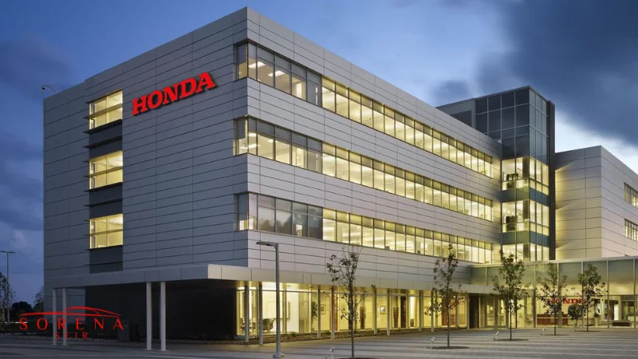

این شرکت ژاپنی 30 هزار نفر کارمند، 89 کارخانه در 33 کشور و در حدود 140 دفتر فروش در مناطق مختلف جهان دارد. گرچه هوندا محصولات متنوعی را تولید میکند؛ اما آکورد و سیویک جزء محبوبترین و پرفروشترین تولیدات این کارخانه هستند. این شرکت با ثبت درآمد سالانه 123 میلیارد دلاری خود توانست در سال 2022 به یکی از برندهای برتر خودرو در جهان تبدیل شود.
